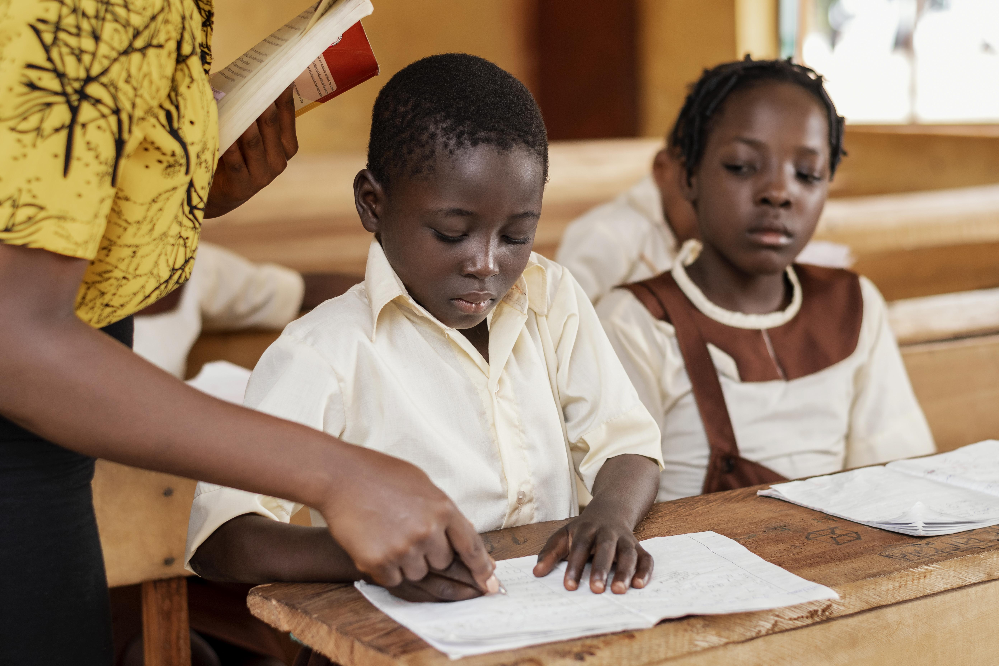
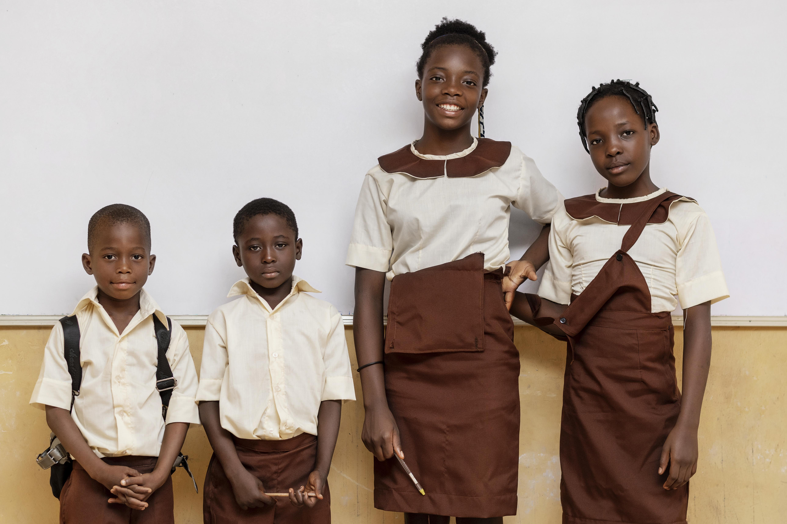
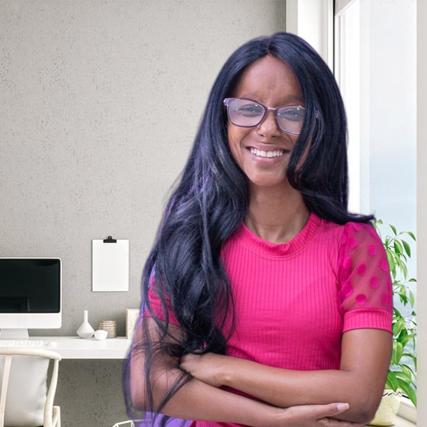

Introdução
A Educação de Qualidade é um dos pilares fundamentais para o progresso global e a realização dos Objetivos de Desenvolvimento Sustentável (ODS) estabelecidos pela ONU. O ODS 4 tem como objetivo garantir o acesso universal à educação, promover oportunidades de aprendizagem ao longo da vida e fortalecer as habilidades necessárias para uma cidadania ativa e uma sociedade próspera.
Investir em Educação de Qualidade não apenas aumenta as oportunidades individuais, mas também impulsiona o desenvolvimento socioeconômico e reduz as desigualdades. Uma educação inclusiva e equitativa capacita as pessoas a enfrentarem desafios complexos, a contribuírem para a inovação e a tomarem decisões informadas que impactam positivamente suas vidas e comunidades.
Ao promover a Educação de Qualidade, vemos transformações em diversos aspectos da sociedade. Taxas de alfabetização aumentam, taxas de pobreza diminuem e a saúde e bem-estar melhoram. Além disso, uma população educada está mais bem preparada para enfrentar ameaças globais, como mudanças climáticas e pandemias, contribuindo para um futuro mais resiliente e sustentável.
O que é

O Objetivo de Desenvolvimento Sustentável 4 (ODS 4) estabelecido pelas Nações Unidas é dedicado a assegurar a Educação de Qualidade para todas as pessoas, independentemente de idade, gênero, origem étnica ou condição socioeconômica. O ODS 4 reconhece a educação como um direito humano fundamental e uma poderosa ferramenta para o progresso social e econômico. Por meio do ODS 4, busca-se melhorar a acessibilidade à educação, aumentar a qualidade do ensino e garantir a igualdade de oportunidades de aprendizagem para todos. Isso envolve não apenas a educação formal, mas também o incentivo à educação ao longo da vida e o desenvolvimento de habilidades relevantes para o mundo em constante evolução.
Desafios

Um dos principais desafios é o acesso desigual à educação, especialmente em regiões remotas ou afetadas por conflitos. A falta de infraestrutura adequada, recursos educacionais e professores qualificados também contribui para a disparidade na qualidade da educação. As rápidas mudanças tecnológicas e a evolução das habilidades necessárias para o mercado de trabalho exigem uma abordagem inovadora para a educação. Superar esses desafios requer a colaboração de governos, organizações não governamentais e a sociedade como um todo, a fim de garantir que a Educação de Qualidade seja verdadeiramente acessível e eficaz para todos.
Contribua

Há diversas maneiras pelas quais indivíduos, empresas e comunidades podem fazer a diferença. Uma forma é apoiar financeiramente organizações e projetos que promovem o acesso à educação em áreas carentes, fornecendo recursos como materiais didáticos, infraestrutura escolar e treinamento de professores.
Sobre mim
Olá mundo, sou Alaíne Fonseca, natural de Salvador.
Atualmente estudante do ELasNaTech, curso voltado para a inserção de mulheres na área de teconologia.
Esse site é meramente didático, voltado para o projeto de aprendizado.